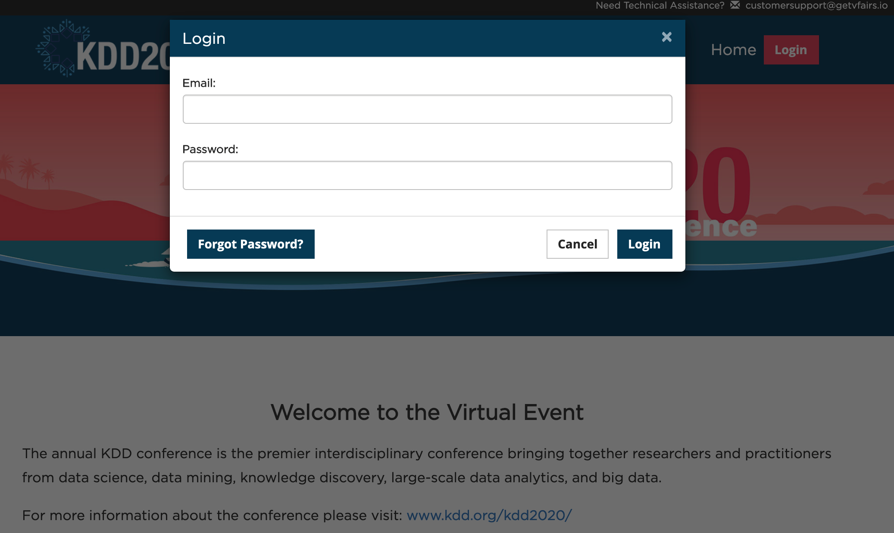
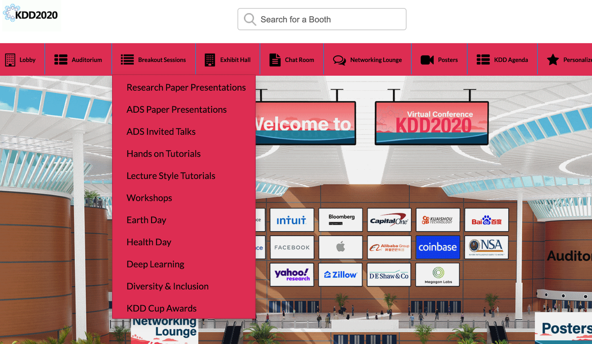
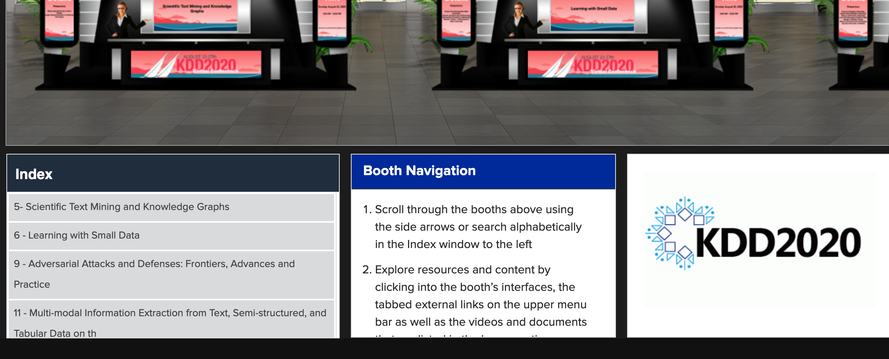
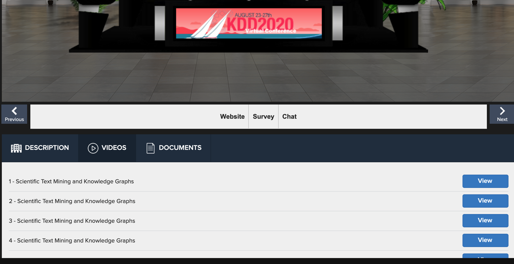

#5 - Scientific Text Mining and Knowledge Graphs
Tutorial in the the 26th ACM SIGKDD Conferences on Knowledge Discovery and Data Mining
[KDD 2020 Schedule] [Full Technical Program (PDF)]
8:00AM - 12:00PM (Pacific Time) Sunday August 23, 2020 | 11:00AM - 3:00PM (Eastern Time)
Instruction
- Step 1: Log in the virtual conference at https://kddvirtual2020.vfairs.com/#Login. Click the link and the Login button is on the top right corner. Enter your email and password. You are lead to https://kddvirtual2020.vfairs.com/en/hall
- Step 2: Click "Breakout Sessions" on the menu. Find "Lecture Style Tutorials" and click it.
- Step 3: See the "Index" box on the left bottom corner. Find "5- Scientific Text Mining and Knowledge Graph" and click it.
- Now you can:
- (1) Click "VIDEOS" on the dark blue menu bar to watch the tutorial videos. There are six parts as given in the "Schedule" section of this web page.
- (2) Click "DOCUMENTS" on the dark blue menu bar to download the tutorial slides. You can also find them in the "Schedule" section of this web page.
- (3) Click "Website" on the white menu bar to come to this web page.
- (4) Click "Chat" if you are interested in chatting with the tutors. You will be lead to a chat room on vFAIRS. You will be able to find a zoom link at the top of the thread called "Announcement" when the tutorial starts. You are welcome to chat with the tutors in the zoom room.
- (5) You can send emails to mjiang2@nd.edu (Meng Jiang) and jshang@eng.ucsd.edu (Jingbo Shang)
|  |
|  |
|  |
|  |
Abstract
Unstructured scientific text, in various forms of textual artifacts, including manuscripts, publications, patents, and proposals, is used to store the tremendous wealth of knowledge discovered after weeks, months, and years, developing hypotheses, working in the lab or clinic, and analyzing results. A grand challenge on data mining research is to develop effective methods for transforming the scientific text into well-structured forms (e.g., ontology, taxonomy, knowledge graphs), so that machine intelligent systems can build on them for hypothesis generation and validation. In this tutorial, we provide a comprehensive overview on recent research and development in this direction. First, we introduce a series of text mining methods that extract phrases, entities, scientific concepts, relations, claims, and experimental evidence. Then we discuss methods that construct and learn from scientific knowledge graphs for accurate search, document classification, and exploratory analysis. Specifically, we focus on scalable, effective, weakly supervised methods that work on text in sciences (e.g., chemistry, biology).
Schedule: Description
| Time (Pacific Time) | Topic |
|---|---|
| 08:00-08:10 | Introduction (Shang) [slides] [video] |
| 08:10-09:00 | Mining Structures from Scientific Text (Shang): Phrase mining, etc. [slides] [video] |
| 09:00-09:35 | Extracting Information from Scientific Text (Jiang) [slides] [video] |
| 09:35-10:05 | Building Scientific Knowledge Graphs (Shang): Ontology, taxonomy, etc. [slides] [video] |
| 10:05-10:30 | Building Scientific Knowledge Graphs (Jiang): Biomedical KG, etc. [slides] [video] |
| 10:30-10:40 | Conclusions (Jiang) [slides] [video] |
Tutors

Meng Jiang is an Assistant Professor in the Department of Computer Science and Engineering at the University of Notre Dame. His research interests include data mining, machine learning, and information extraction. He has published over 50 conference and journal papers of the topics. His work was KDD 2014 Best Paper Finalist. He has delivered seven tutorials in conferences such as KDD, SIGMOD, WWW, CIKM, ICDM, and SDM. He is the recipient of Notre Dame Global Gateway Faculty Award.

Jingbo Shang is an Assistant Professor at UC San Diego, jointly appointed by Computer Science Engineering (CSE) Department and Halıcıoğlu Data Science Institute (HDSI). His research focuses on mining and constructing structured knowledge from massive text corpora with minimum human effort. His research has been recognized with multiple prestigious awards, including Grand Prize of Yelp Dataset Challenge in 2015, Google PhD Fellowship in Structured Data and Database Management in 2017.